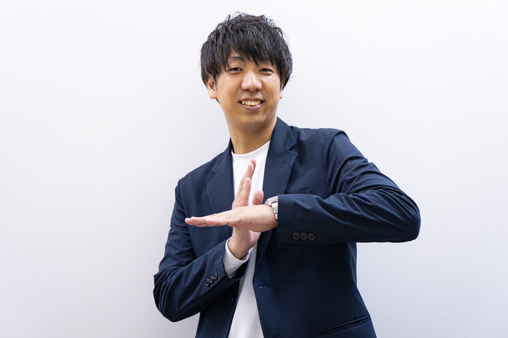
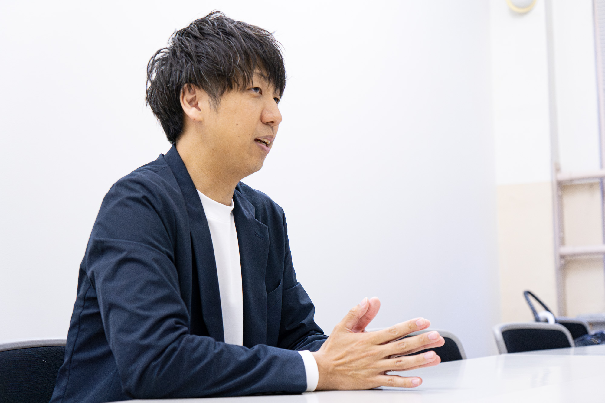
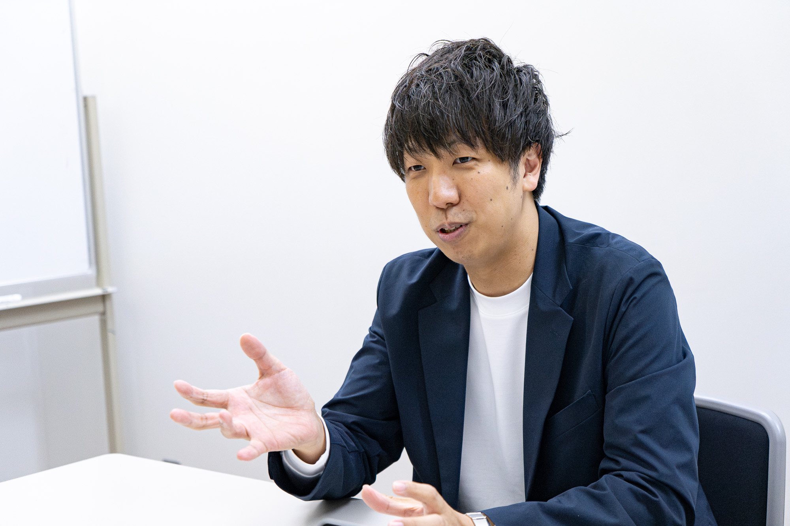
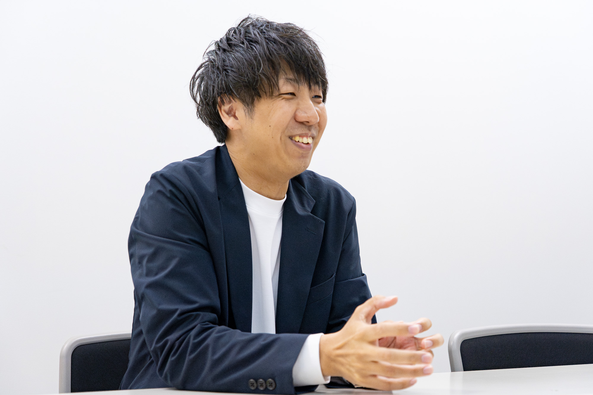
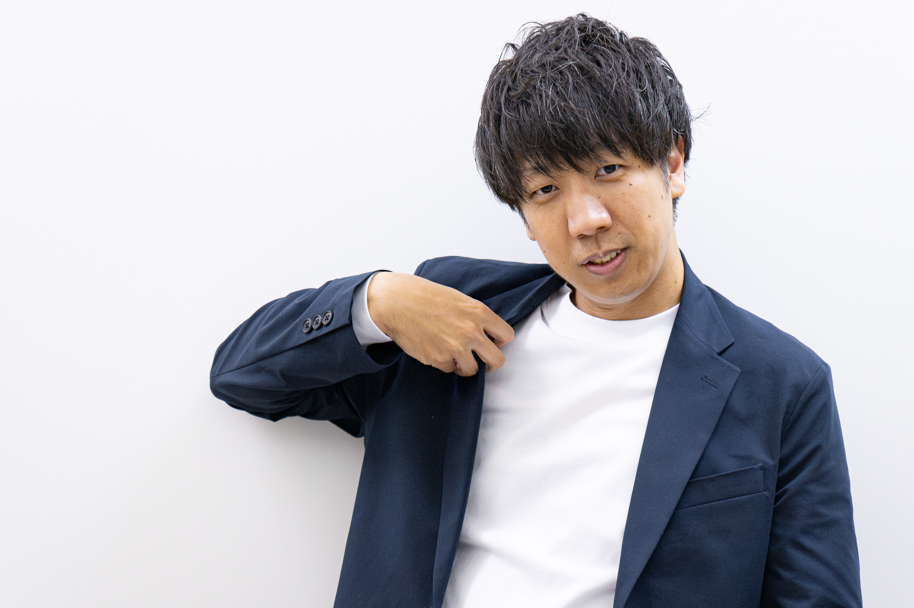
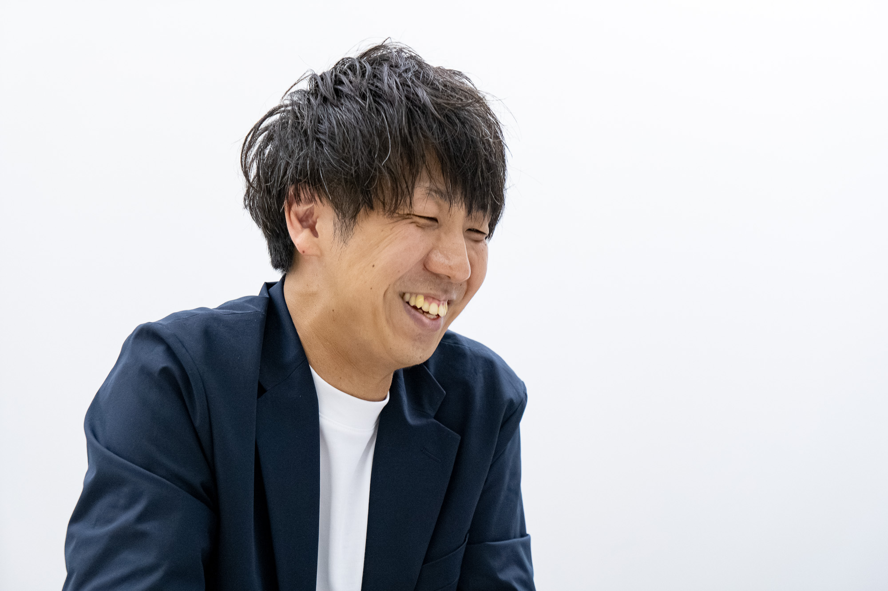

元プロのお笑い芸人であり、現在は社会人として働きながら、福岡社会人お笑いサークル「＋Fun」の代表を務める田島将さん。
「お笑いをやる側の楽しさ」を広め、福岡を第三のお笑いの街へ。
その熱い想いと、これまでの歩みを語っていただきました。
- 1989年5月24日生まれ / 熊本県出身
- 趣味・特技：マンガ、藤原竜也
- 職業：会社員
- X：@g_tashima524
- Instagram：@g_tashima
ーーまずは自己紹介をお願いします。
田島将：はい、福岡社会人お笑いサークル＋Fun（プラスファン）の代表を務めております、田島将です。よろしくお願いします。元々、福岡でお笑い芸人をやっておりました。今は、就職をして普通に働いております。
ーーお笑い芸人になろうと思ったきっかけを教えてください。
田島将：幼少期からお笑いを観るのが好きで、面白いなと思ってたんですけど。中学校の時かな、「内村プロデュース」っていう番組があって。もう本当に芸人の地肩みたいな、大喜利とか、自分で笑いをつくるみたいなのを見て、「芸人めちゃめちゃかっこいいな」と思って。
なりたいなと思いだしたのが中学3年生ぐらいかな。で、普通に高校に進学しました。三者面談の時に、「NSCに行くか大学に行くか悩んでます。」って先生に言ったら、「悩んでるんだったら大学に行けや」っていうことになって。「たしかに」と思って（笑）
で、大学に進学したんですけど。その時に、まだずっとお笑いをやりたい気持ちはあったんですけど、やっぱり大学生なんで就活とかしないとね、取り残されちゃうんで。就活もちゃんとしまして。で、その後卒業してから1年間働いてました。
田島将：そこからやっぱり「お笑いやりたかったな」ってぼんやりあって、その気持ちが働きながら強くなっていったので。そこで、同級生で一番面白いと思ってた友達を相方に誘って、「ガンネン」を結成してお笑い芸人になりました。
なんですが、ちょっと僕特殊でして。何が特殊かっていうと、まず養成所に行ってない。ワタナベエンターテインメントに所属はしていましたけど。なんでかっていうと、熊本で1年間芸人をやったんですよ、フリーで。
熊本に芸人がいなくて、若手のタレントがいないっていうのをローカルのテレビでやっていて。それを見て「これだ！」って。「ライバルがいないなら作ればいいんだ！」と思ってやったんですけど、地盤が無さすぎて、お笑いやるところもないし。
その時24歳ぐらいの若造でしたから、やり方もわからないから。1年間頑張って、たまに運良くテレビに出られたりとかあったけど。そうしたら、「ワタナベ九州っていうところが福岡にあるらしい」っていう話があって、そのライブを見に行こうとなって。当時繋がりがあった先輩の紹介でワタナベのライブに出始めたのがきっかけですね。その流れで1年間ライブに出まして、「じゃあ所属する？」って話になって芸人になれたっていう感じになります。
ーー芸人としては何年活動されたんですか？
田島将：だいたい7年、8年くらいですね。
ーー芸人を辞めたきっかけは何だったんですか？
田島将：そもそも、コンビを結成する時に「30歳になって稼げてなかったら辞めよう」っていうのを決めてたんですよ。決めてたんですけど、僕らのコンビ名が「ガンネン」で、「平成元年生まれのコンビ『ガンネン』です」っていってやってたんですけど。僕らが30歳の時にちょうど令和元年になったんですよ。
その時に令和元年フィーバーみたいなのが起きるじゃないですか。新しい時代、みたいな。その時に「ガンネンっていうコンビ名のやつがおるぞ」って福岡でなったんですよ。その時にちょっと”ガンネンバブル”みたいなの起きた、んですけど結構すぐ終わって。「このタイミングで売れなかったらもう無理じゃねえか？」ってなって。
というのと、約束だった「30歳までに・・・」もあったし。この時ギリギリバイトせんでいいぐらいだったんですよ。それで、「じゃあ辞めよう」と。結婚もしてたしね。どうするか？ってなった時に、僕は辞める、相方は続けるっていう形で芸人を辞めるっていう感じになりました。そこから、普通に就職をして働き出したって感じですね。
ーーそこから＋Funを立ち上げるまでの経緯を教えてください。
田島将：そうですね。芸人を辞めて3年ぐらい働いて、思ったことが一つあって。辞めたけど、ネタをやりたいなっていうのがぼんやりあって。その時思ったのが、「僕はネタをやろうと思ったらできるけど普通の人はできなくないか」って思って。
お笑いって楽しもうと思った時に絶対やる側じゃなくて観る側じゃないですか。「ライブで観て楽しい」「テレビで見て楽しい」。社会人もやる側の楽しさも味わっていいんじゃないかと思って。草野球あるし、フットサルもあるし、バンドだって趣味でやってる人もいるじゃないですか。
社会人がお笑いをやるってあんま見たことないなって。じゃあサークルにしたらみんなやりやすいかなと思って、立ち上げようと思ってやりました。
ーー現在の活動においてモチベーションになっているものはなんですか？
田島将：社会人でもお笑いを楽しみながら活動できてるなっていうのが大きくて。やってる側も社会人だし、観てる側も結構働いてる人が多くて、社会人が笑い合ってるっていうのが良いなと思っていてモチベーションになっています。まあ、もう一つ言うなら、「すごいことやってますね〜」の声？（笑）すごくモチベーションになっています。
ーーありがとうございます（笑）。
田島将：どういたしまして。

ーー＋Funとして今後実現したいことを教えてください。
田島将：＋Funとして実現したいことは、「福岡市民ホールでライブをやること」が大きな目標。もう一つは、社会人が目指せるような、「社会人で一番面白い」っていうことを証明できる場っていうのを作りたい、っていう2つの目標があります。
ーーお笑いライブの魅力を教えてください。
田島将：やっぱり、その時その時のリアルな笑いとか、芸人の間とかテンポとか。テレビで見るのと生で感じるのって全然違うと思うんですね。「テレビだとそんなに笑えなかったけど、ライブだとこんなに面白いんだ」みたいなのはライブの良さだと思います。
ーー田島さんは今後、福岡が大阪東京に次ぐ第三のお笑いの街になると思いますか？
田島将：思います！めちゃめちゃ思ってます。そもそも、夢を追いかけるのに東京か大阪じゃないといけない理由って何なんだろうって思います。でも、それを東京大阪じゃなくてもできるよっていうのが福岡では証明できると思ってます。なので、第三のお笑いの街になりうると思います。だし、福岡を第三のお笑いの街にしたいという目標も持ってます。
ーーどうしたら福岡は第三のお笑いの街になると思いますか？
田島将：エンタメが身近にあるかどうかだと思うんです。東京には芸能人いっぱいいるし、東京行ったらいっぱいあるじゃないですか。だから、触れる機会が多いっていうのは大きいし、そっちに興味がいくよね。大阪だって笑いの本場と言えば大阪ですみたいな。劇場とかもいっぱいあるし。
そんな感じで、身近に接することができる機会があるかどうかだとは思います。なので、＋Funも福岡でお笑いに触れるきっかけの一つになれればなと思ってます。
ーーここからはお仕事についてお聞きします。今のお仕事を選んだ理由を教えてください。
田島将：お客様に会ってご提案をするとか、お話を聞いてどうしていくかを考えていく業種なんで、そもそも向いてると思うということで始まって。あと、僕の幼馴染が今の会社に勤めていて。その幼馴染が僕が30歳になったら芸人を辞めるっていうのを覚えてたんですよ。で、「どうすんの？」って聞いてきて、「辞めようと思ってる」と。それでタイミングが合って今の仕事を始めました。
ーー芸人としての経験が社会人になって活きたことはありますか？
田島将：これはめちゃめちゃありますね。僕ツッコミだったので。上司とか少し怖い先輩からの絶妙なボケみたいなのが社会人だったらあると思うんですけど、そういう時に周りは「ふふっ（笑）」って感じですけど。僕は「ちょっとちょっと！」「違うでしょ！」みたいな、いつものクセでね。そしたらみんな「あの人いけんだ！？」って感じで一目置かれるっていうのは芸人ならではなのかなと思います。
ーー今後の目標や挑戦したいことはありますか？
田島将：やりたいことが多すぎてね、何からやったらいいかわからないんですけど。やっぱり、今の＋Funの主宰っていうのを主にやってるんで、サークルを盛り上げていけるようなことをたくさん企画していきたいですね。もちろん、みなさんのご協力があって成立してることなので。どんどん大きくなってみなさんの身近なサークルになれたらなと思います。
「お悩み解決編」公開予定！
取材／きむらまどか 撮影／Kota